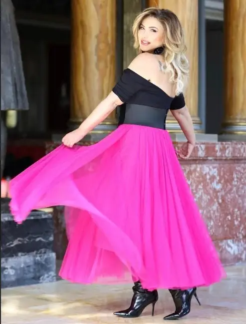
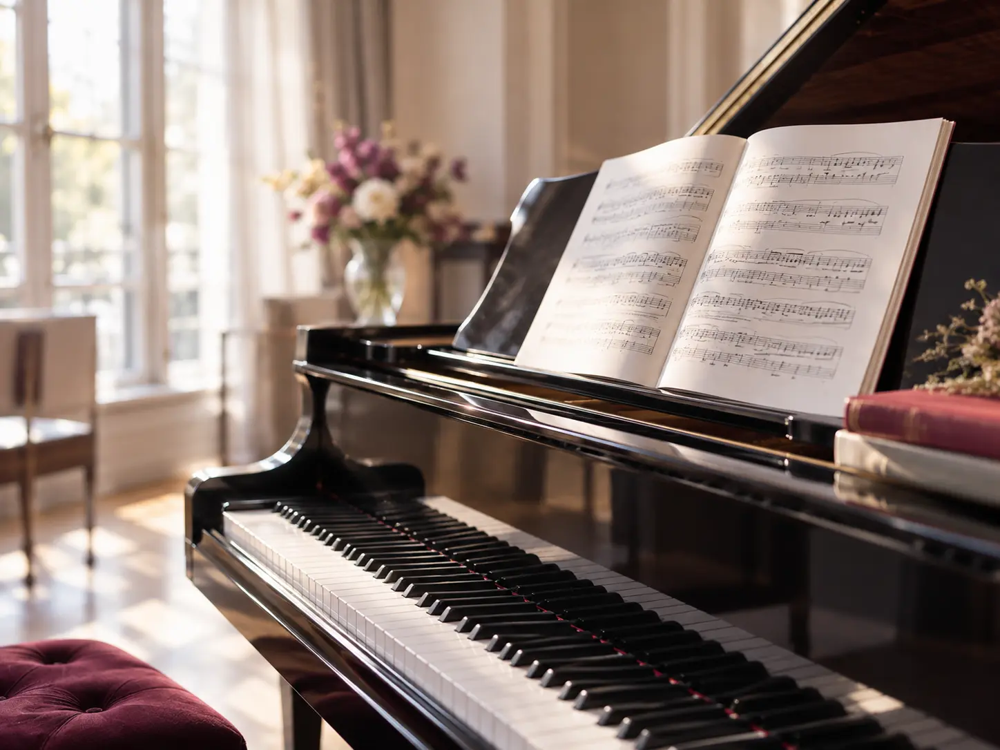
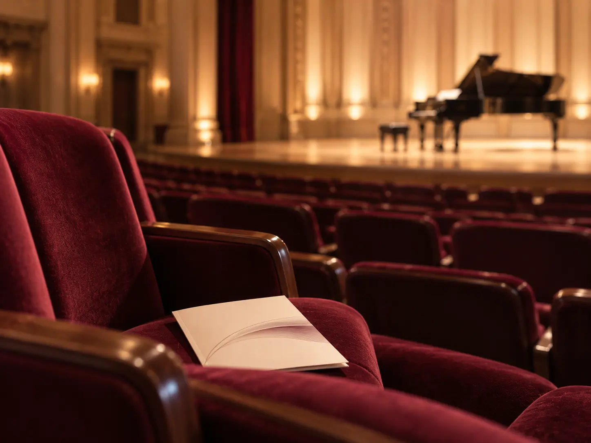
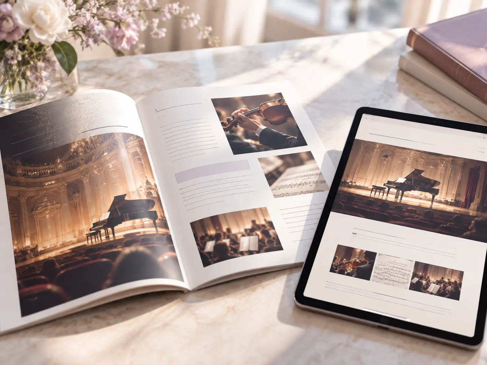

若い才能を、世界へ。
名古屋イタリアオペラコンクール
若手歌手の発掘と育成を通じて、次世代のオペラ界を担う人材を応援します。

CULTURE CONNECTS US
この舞台の感動を、
ともに。
THE SPECIAL STAGE
第4回名古屋イタリアオペラコンクール関連特別公演
世界を魅了するディーヴァ、来日ベルカントに出逢う、特別な一夜
世界的ソプラノ歌手であり、名古屋イタリアオペラコンクールの審査員を務めるデジレ・ランカトーレを迎え、ベルカントの真髄をお届けします。
美しい旋律と卓越した歌唱技術が織りなす、イタリアオペラの華麗な世界をどうぞご堪能ください。
さらに、同コンクールの入賞者たちも、しらかわホールの舞台で歌声を披露。世界で活躍する歌姫と未来を担う若き才能が彩る、特別なガラコンサートです。
公演チラシ｜画像を押すと拡大できます

ARTIST PROFILE
ソプラノ
イタリア、パレルモ生まれ。18歳でザルツブルク音楽祭「フィガロの結婚」にてオペラ・デビュー。その後、英国ロイヤル・オペラ、ウィーン国立歌劇場、ローマ歌劇場、チューリッヒ歌劇場、ミラノ・スカラ座等、ヨーロッパ主要歌劇場に招かれる。
パレルモ・マッシモ劇場、トリエステ・ヴェルディ劇場、ボローニャ歌劇場などで来日している。可憐な容姿とコロラトゥーラテクニックで聴衆を魅了してきたが、声の成熟とともに、ノルマなど劇的な役柄にもレパートリーを広げている。
また近年では、指導者としても熱心で、多くの優秀なオペラ歌手を輩出している。
OUR VISION
音楽を通じて、人と文化をつなぐ。
私たちが目指すのは、一度のコンサートを成功させることだけではありません。若い音楽家が世界へ羽ばたく機会をつくり、世界で活躍する音楽家を日本に紹介し、イタリアオペラの魅力を次世代へ伝えていくことです。
企業の皆様のご支援が、音楽家の未来を拓き、日伊の文化交流を深めます。文化を育むパートナーとして、この歩みをご一緒しませんか。

WHAT WE DO
名古屋イタリアオペラコンクール
若手歌手の発掘と育成を通じて、次世代のオペラ界を担う人材を応援します。
世界の歌手を迎えるコンサート
世界で活躍する音楽家を日本へ。心に残る舞台を通して、オペラの魅力を届けます。
日本とイタリアの文化交流
両国の音楽家をつなぎ、新たな挑戦と交流が生まれる機会を育みます。
教育・育成事業
イタリアオペラの豊かな伝統と表現を、未来を担う音楽家へ継承します。
※画像は活動内容を表したイメージです。
THE VALUE OF PARTNERSHIP

01 / CULTURE若い音楽家の可能性を広げ、芸術文化の発展と国際交流を支える取り組みです。

02 / CONNECTIONお取引先、お客様、社員の皆様と。音楽の感動を共有する、特別な交流の機会に。

03 / COMMUNICATION公式サイトや公演プログラムへの掲載を通して、企業の文化支援活動を伝えます。
※画像はイメージです。

※ファンボックスの利用人数は6名です。各プランの詳細はお問い合わせください。
A MOMENT TO SHARE
お取引先や大切なお客様をお招きし、上質な音楽のひとときを共有する。特別な鑑賞空間が、芸術文化を通じた新たな交流の機会を生み出します。
OUR JOURNEY
コンクールの開催、国内外の音楽家との交流、教育・育成。
イタリア音楽文化の未来へつながる活動を続けています。
横にスワイプしてご覧ください。写真を押すと拡大できます。
過去の活動写真・ご提供資料より。今回の公演の出演者・会場を示すものではありません。
第4回名古屋イタリアオペラコンクールは、
メセナ協議会認定の活動です。
寄付によって税優遇措置があります。
HOW TO JOIN
ご希望のプランや、ご質問をお知らせください。
協賛内容・特典など、詳しくご案内します。
内容をご確認後、お申し込みのお手続きへ進みます。
BECOME A PARTNER
ご協賛やパートナー制度について、
どうぞお気軽にお問い合わせください。